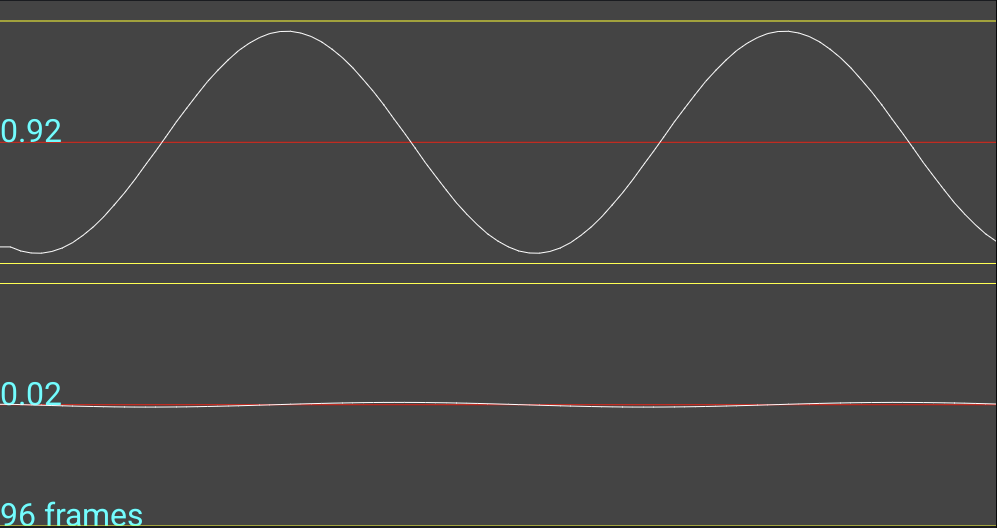

This panel allows you to set levels for loopback signals
The process is as follows:
- Select the input and output devices on which the loopback is executing.
- Select a channel from the Channel selection spinner.
- Click "Start" to play a sine wave on the selected channel of the selected output device.
- Use the volume control on the DUT and/or external peripheral to set an appropriate signal level.
- Repeat the process for other channels. Note: You must stop the audio before selecting a different channel.
The signal level for a single channel should look something like this:
